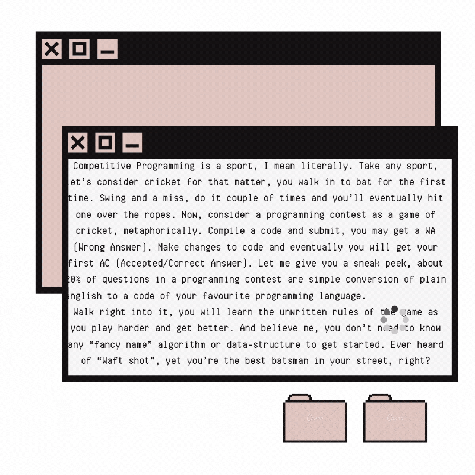

Competitive ProgrammingLast updated: 2020-08-04
Roadmap from zero to become expert in Competaive Programming.
Jump Start
Level Zero : A Walk in the Park
Alright, let’s conquer the first 20% of programming problems out there.
You need to know:
Intermediate hold on any one programming language
English! Convert english to code!
Let’s take an example problem of this level
All you have to do is, read input line from STDIN and print reverse of that line to STDOUT. Go ahead, make a submission. Seek your first AC.
Level One : Welcome to the Jungle
Okay, now you’re ready to take on some real challenge. Hold tight, we are diving deeper.
You need to know:
Sorting
- Bubble Sort
- Insertion Sort
- Selction Sort
- Merge Sort
- Quick Sort
Searching
- Linear Search
- Binary Search
Number Theory
Greedy Technique
Refer
SortingSearching
Number Theory
Algebra Section from here
Greedy
Note:
*At this Level good platform to start with are:
Hackerrank : Beginner friendlyHackerearth
For maths practice problems on
SPOJLevel Two : Take the fast track
By now you’ve realised that the questions are framed to deceive the way we think. Sometimes, If you convert plain english to code, you’d end up with TLE (Time Limit Exceeded) verdict. You need to learn a set of new techniques and algorithms to cope up with the time limits. In certain cases, Dynamic Programming (DP) comes to the rescue. Infact, you might have already intuitively used this technique. There’s always at least one question in any contest that can be solved by DP.
Also, you’d have noticed that there are questions that just can’t solved by linear array data-structures.
You need to know:
- Graph Theory
- Disjoint Set(Union-Find)
- Minimum Spanning Tree
These set of data-structures will get you quite far enough. Moreover, you’d have figured that the real art is to modify the techniques you know in order to solve a question. All Easy-Medium and Medium level questions can be tackled in this fashion.
Refer
Complete Graph CourseDisjoint Set
More Graph Concepts from here
Note:
*Start Participating in contests on diffrent websites like :
HackerearthCodechef
Level Three : Load up the weapons
You are all set to top the leaderboards of Short Programming Challenges, just keep steady persistence. As I’ve already mentioned, it’s a sport, you won’t master it until you actually do it. Go ahead, participate in a short contest, know your strengths, weaknesses and see how you handle the adrenaline mode when the clock is ticking.
Stick to your own logic as long as possible, you’ll eventually come up with something similar to the algorithm required to solve the question. You just need to brush it up. Several of these techniques will help you solve some of the toughest of the problems around.
You need to know:
- Segment Trees
- String algoritms (Rabin Karp, KMP , Z Algorithm, Manacher)
- Tries, Suffix array , Suffix Tree
Refer
Segment-TreeString Algorithms Basics
String Proceessing Section from here
Trie
Suffix Tree
Suffix Arrays
Note:
*Start Participating in contests on diffrent websites like :
HackerearthCodechef
Time to start with Codeforces
Level Four : Heavy Artillery
You’ve already become a pro at this game. If you fail in one, go back and analyze where you went wrong. Read the editorials after the contest. Many programmers underestimate the value of post contest analysis, because you had already figured the whole solution but missed just a single case. So the urge of knowing what you missed is irresistible and you’ll never forget what you learnt in the analysis.
You need to know:
- Heavy Light Decompositio
- Graph Coloring, Network Flow
- Sqrt Decomposition
Master The Dynamic Programming
- Top Down, Bottom up
- Dp on Trees
- Digit Dp
- Grid Dp
Refer
CP algorithms websiteNote:
*Start Participating in contests on diffrent websites like :
HackerearthCodechef
Codeforces
2 Cents
Many programmers argue that the problems in competitive programming do not relate to the real life programming work. For the most part, it is true. Then why do we do it? Because it makes you a better programmer. How?
- Time limit always makes you write time efficient solutions.
- Critical test data helps you write correct solutions, in one go!/li>
- Further it makes you great at debugging code
- Hard problems makes you break down the problem into chunks, solve them individually and bring it all together to solve the main problem.
Yes, competitive programming is not the only way to master these qualities but it is one of the best ways to do so. Give it a shot, if you enjoy it, it’s worth it. You will be rewarded with objective benefits. If you don’t, even after repeated trials, give yourself a break.
Note:
*Practice is something which can make a undefeatable warrior in competitive programming.